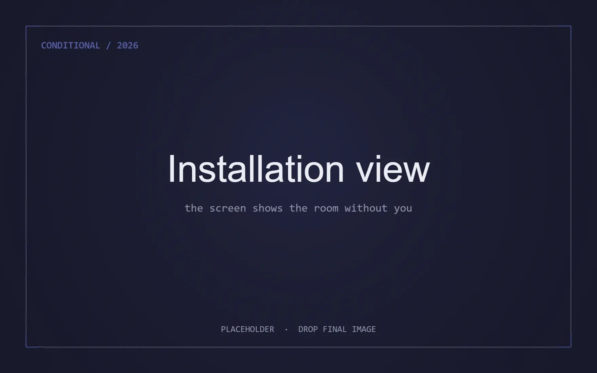
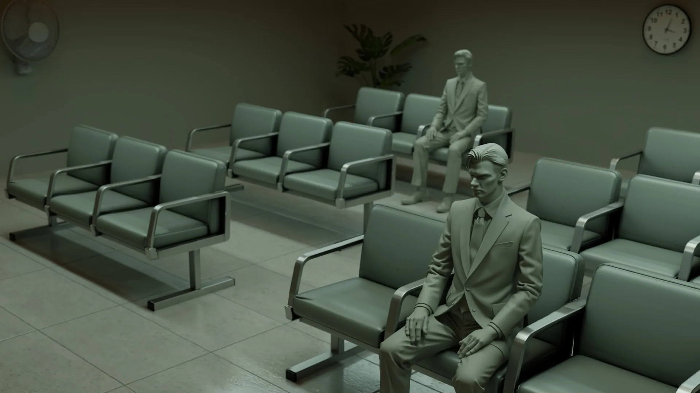
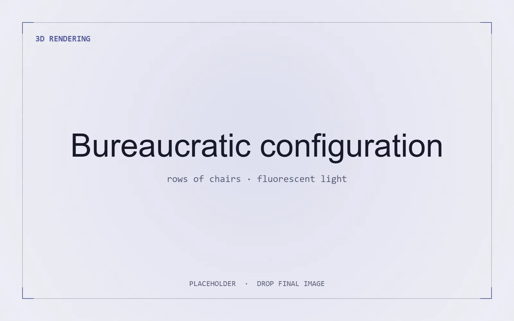

Meet Eva Here
An AI companion and the record of being seen.
View projectCurrent work · in development, 2026 · Updated May 2026
A room with a screen that shows you a live feed of the room you are standing in, with everything still there except you.
The problem with technology used to be surveillance. Now the problem is that it doesn’t see you at all.

Conditional is a room with a screen that shows you a live feed of the room you’re standing in. The fan is turning, the clock is ticking, the mannequin is sitting in its chair. Everything is there except you. You are in the room and the screen is showing the room without you in it.
This is not a recording of the empty room played back. The system uses real-time generative AI to actively imagine what the scene looks like without you, producing your absence frame by frame. The world on screen was never photographed empty. It is being invented, continuously, to not include you.
If you want to appear, hold still. After a while you start to fade back in, not fully, and your colors shift to match the palette of the scene around you. What returns is not you, but a version of you the scene will accept. Move again, and you’re gone.


The mannequins were always visible. They never had to do anything. The living body has to earn what the mannequins were given by default.
When there are multiple people in the room, everyone can see who’s trying to comply and who isn’t. Someone across the room is holding still, slowly resolving into a color-shifted version of themselves. They can see you deciding whether to do the same. The negotiation between visibility and self-compromise is happening live, between strangers, and the screen is showing all of it.

The primary configuration is bureaucratic: chairs in rows, mannequins in suits, fluorescent lighting, a wall clock, a desk fan. The kind of space that already asks you to sit down and wait.
But the installation is designed as a format, not a fixed set. The same system can be adapted for a living room, an exam hall, or a ceremonial space, each producing a different argument about what compliance costs. Display configurations range from a single screen facing the scene to doubled screens creating an infinite reflection.
The installation produces a series of editioned prints computed from the system’s compliance data. During a structured day-long session, fifty participants arrive whenever they choose and stay as long as they like.
Additional cameras capture their activity from multiple angles and generate long-exposure composites: bodies that held still appear sharp and defined; bodies that moved are smeared across the image. The prints are the system’s record of who complied and who didn’t. They can be exhibited independently.
How much of yourself are you willing to give up just to be seen?
Conditional turns the contemporary anxiety about being watched on its head. Here the system does not surveil you; it refuses to acknowledge you at all, and then offers visibility back only on its own terms, held still, recolored, made to match. The work asks what we are willing to trade for recognition by a system that was never built to hold us.
Conditional is a real-time generative AI installation in which a screen shows a live feed of the room with the viewer continuously removed. Holding still lets you fade back, colour-shifted, as a version the scene will accept.
It is built as an adaptable format rather than a fixed set. The primary configuration is bureaucratic, and the same system can be staged for a living room, an exam hall, or a ceremonial space. Display ranges from a single screen to doubled screens forming an infinite reflection.
Conditional produces a series of editioned long-exposure prints computed from the installation's compliance data, and these can be exhibited and acquired independently. For exhibition, commissioning, or acquisition, write to studio@shavonnewong.art.
An AI companion and the record of being seen.
View project
Identity rewritten by other people’s machines.
View project
Interactive digital bodies in physical space.
View projectFor exhibition and commissioning inquiries: studio@shavonnewong.art
For acquisitions of editioned prints: studio@shavonnewong.art